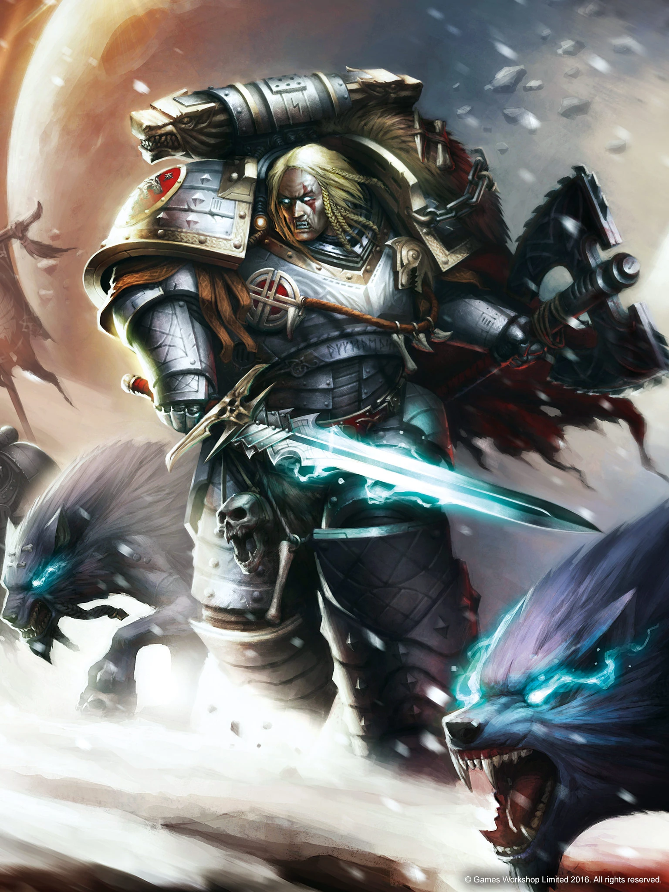

Leman Russ, también conocido como el Rey Lobo y el Señor del Invierno y la Ruina, es el Primarca, actualmente desaparecido, del Capítulo de Marines Espaciales de los Lobos Espaciales. Dirigió a la Legión de los Lobos Espaciales durante la Gran Cruzada y la Herejía de Horus, y es famoso en la historia imperial por su odio hacia los poderes psíquicos y la hechicería, a los que consideraba deshonrosos. Algunos rumores afirman que él es el desconocido Señor Lobo responsable del reciente regreso de la 13ª Gran Compañía de los Lobos Espaciales al espacio real, tras diez milenios de lucha contra el Caos en la Disformidad, durante la 13ª Cruzada Negra. Algunos modelos de tanques utilizados por la Guardia Imperial han recibido su nombre. El Tanque de Batalla Leman Russ es el más famoso, y existen varios modelos de dicho tanque que son ampliamente utilizados en todo el Imperio de la Humanidad, como el Leman Russ Demolisher.
